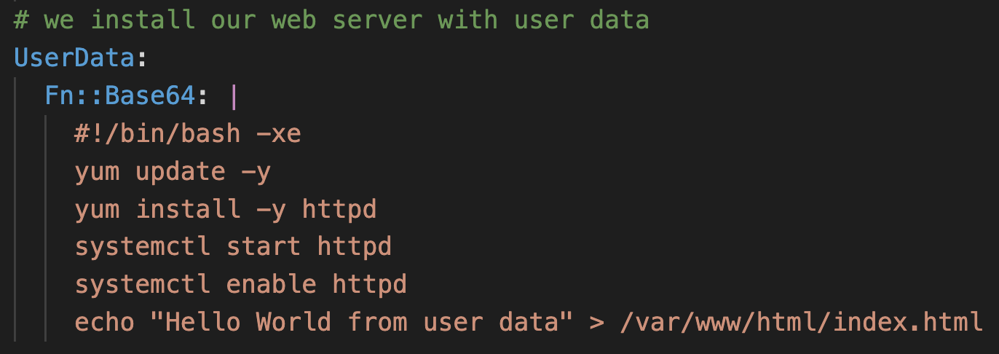

プロビジョニング・デプロイ自動化とInfrastructure as Code

- CloudFormation は AWS リソースのプロビジョニングに特化。
- Beanstalk, OpsWorks はインフラのプロビジョニング、アプリケーションのデプロイ、運用時のモニタリングまで全体をカバー。
(参考)【AWS初心者向けWebinar】AWSのプロビジョニングからデプロイまで
https://www.slideshare.net/AmazonWebServicesJapan/awswebinaraws-54198407
(参考) VMware でのプロビジョニングとデプロイ
- プロビジョニング
- 準備・予測という意味
- リソースを準備すること。主にディスクストレージエリアのサイズや方式（ShinやThick)、CPUやメモリのリソース予約を行う。
- 事前にリソース消費を予測して準備することが必要。主にストレージのプロビジョニングはデプロイにも関係してくる。
- デプロイ
- 展開・生成という意味
- プロビジョニングされたエリアにOSイメージを生成すること。テンプレート、マスターイメージよりデプロイする。
- もともと「デプロイ」にはS/Wをインストールするという意味もあるが、VMwareではテンプレートなどからOSイメージを生成することをいう。
- CloudFormation は AWS インフラのプロビジョニング
- ソフトウェアのデプロイやアップデートなどはしない。
- CloudFormation + Beanstalk/OpsWork との組み合わせもできる
- Beanstalk, OpsWork はプロビジョニング、デプロイ、モニタリングまで含む
- Web アプリの定番構成 → Beanstalk
- Web アプリでない、定番構成でない、既に Chef/Puppet 使っている → OpsWork
AWS CloudFormation
- AWS サービスのプロビジョニングを実施するサービス。
- テキストファイルによるテンプレート記述。
- 無料。
CloudFormation テンプレート
- JSON or YAML 形式。
- 変装をパラメータとして渡せる。
- テンプレートは S3 にアップロードする必要がある。
- CloudFormation デザイナー
- テンプレート作成の GUI ツール。リソースをドラッグ&ドロップして編集。

- https://docs.aws.amazon.com/ja_jp/AWSCloudFormation/latest/UserGuide/working-with-templates-cfn-designer-overview.html
- テンプレートスニペット
- AWS の各種リソースのテンプレート例 (JSON/YAML)
- https://docs.aws.amazon.com/ja_jp/AWSCloudFormation/latest/UserGuide/CHAP_TemplateQuickRef.html
テンプレートの項目
Parameters
Parameters の項目
- Type:
- String
- Number
- CommaDelimitedList
- List\<Type>
- AWS Parameter (to help catch invalid values – match against existing values in the AWS Account)
- Description
- Constraints
- ConstraintDescription (String)
- Constraints がエラーになった場合にエラーメッセージとして出力する文字列。
- Min/MaxLength
- Min/MaxValue
- Defaults
- AllowedValues (array)
- AllowedPattern (regexp)
- NoEcho (Boolean)
- パラメタ値をコンソールや CLI 出力でマスクするかを指定。
- ConstraintDescription (String)
- https://docs.aws.amazon.com/AWSCloudFormation/latest/UserGuide/parameters-section-structure.html
Fn::Ref function
- パラメタやテンプレート内の他のリソースを参照する。
- YAML ではショートカット !Ref が使用できる。
SSM Parameters Store の参照
- Type に AWS::SSM::Parameter::* を指定すると Value に Parameters Store のパラメータ名を指定して値を参照するようになる。
Parameters:
InstanceType:
Type: 'AWS::SSM::Parameter::Value<String>'
Default: /EC2/InstanceType
ImageId:
Type: 'AWS::SSM::Parameter::Value<AWS::EC2::Image::Id>'
Default: /EC2/AMI_ID

- AWS management の AMI の Parameters Store がある
Parameters:
LatestLinuxAmiId:
Type: 'AWS::SSM::Parameter::Value<AWS::EC2::Image::Id>'
# obtain list with
# aws ssm get-parameters-by-path --path /aws/service/ami-amazon-linux-latest --query 'Parameters[].Name'
Default: '/aws/service/ami-amazon-linux-latest/amzn2-ami-hvm-x86_64-gp2'
# this works for Windows too
LatestWindowsAmiId:
Type: 'AWS::SSM::Parameter::Value<AWS::EC2::Image::Id>'
# obtain list with
# aws ssm get-parameters-by-path --path "/aws/service/ami-windows-latest" --region us-east-1
Default: '/aws/service/ami-windows-latest/Windows_Server-2016-English-Core-Base'
Mappings
- リージョンごとに使用する AMI ID を指定するマッピングテーブルなどを定義する。
- AMI はリージョンリソースなので、リージョンごとに AMI ID が異なる。
- Fn::FindInMap function でアクセスする。
!FindInMap [ MapName, TopLevelKey, SeconLevelKey ]

- https://docs.aws.amazon.com/ja_jp/AWSCloudFormation/latest/UserGuide/mappings-section-structure.html
Conditions セクション
- テンプレート内で宣言的に条件指定を行って Resources, Outputs の生成を制御。

- 各 Resource, Output の Condition 属性で参照する。
- EnvType == prod の場合だけ特定リソースを作成する例。
Conditions:
CreateProdResources: !Equals
- !Ref EnvType
- prod
Resources:
EC2Instance:
Type: 'AWS::EC2::Instance'
Properties:
ImageId: ami-0ff8a91507f77f867
MountPoint:
Type: 'AWS::EC2::VolumeAttachment'
Condition: CreateProdResources
Properties:
InstanceId: !Ref EC2Instance
VolumeId: !Ref NewVolume
Device: /dev/sdh
NewVolume:
Type: 'AWS::EC2::Volume'
Condition: CreateProdResources
Properties:
Size: 100
AvailabilityZone: !GetAtt
- EC2Instance
- AvailabilityZone
- https://docs.aws.amazon.com/ja_jp/AWSCloudFormation/latest/UserGuide/mappings-section-structure.html
CreationPolicy 属性
- 各リソースに指定できる属性。リソースの特性に合わせた生成完了条件を指定する。
- 例) AutoScalingGroup リソースが作成された後、グループ内の2個のインスタンスからシグナルがとどくまで生成完了とならず、次に進まない。
UpdatePolicy 属性
- AWS::AutoScaling::AutoScalingGroup
- AutoScalingRollingUpdate
- AutoScalingReplacingUpdate
- AWS::Lambda::Alias
- RoutingConfig で加重エイリアスの重み付け配分
- https://docs.aws.amazon.com/AWSCloudFormation/latest/UserGuide/aws-attribute-updatepolicy.html
DeletionPolicy 属性
- Delete, Retain, Snapshot
組み込み関数
Fn::Ref
Fn::GetAtt
- リソースの属性を取得する。
Role:
Fn::GetAtt:
- "LambdaExecutionRole"
- "Arn"
Fn::Join
Fn::Sub
- 文字列内で参照する変数を値に置き換える(Substitute)。
- !Sub "Your account-id is ${AWS::AccountId}."
CloudFormation スタック
- プロビジョニングはスタックを作成して実施。
- テンプレートに必要なパラメータを入力する。
- テンプレートを変更してスタックを更新するとプロビジョニング済みリソースが変更される。
- スタックを削除するとプロビジョニング済みリソースが削除される。

ClientRequestToken
- CreateStack リクエストの一意の識別子。
- マネジメントコンソールは自動でつけてくれるが、CLIやAPIで実行する場合は自分で指定する。
TimeoutInMinutes
- スタックのステータスが CREATE_FAILED になる までに待機可能な時間。
DisableRollback
- スタック作成時のロールバックを無効化。（コンソールの 「
Rollback on failure」 設定） - FAIL した場合もリソースは残り、後からスタックごと削除できる。
OnFailure
- スタック作成に失敗した場合に実行するアクションを指定。
- DO_NOTHING、ROLLBACK、DELETE のいずれか。
ROLLBACK: 失敗時にすべてのリソースを削除し元の状態に戻す (デフォルト)。DO_NOTHING: 失敗した状態のままリソースを残す。DELETE: スタック全体を削除する。
- スタック更新に失敗した場合は、自動的に以前の成功した状態へロールバックされる。失敗の詳細はイベントログで確認できる。
- DELETE ではスタックの情報そのものが消去されるのでスタックのログも見られない。
- OnFailure と DisableRollback の両方は有効にできない。
- DisableRollback が false の場合、OnFailure の指定に従ってスタックがロールバックされる。
リソースのインポート
- 作成済みリソースと同じ内容のリソースをテンプレートに記載してスタック作成時にリソースの識別子を指定して追加する。
- インポートするリソース はテンプレートに DeletionPolicy 属性が必要。
- https://dev.classmethod.jp/articles/cloudformation-import-existing-resources/
AWS Pricing Calculator
- コンソールでのスタック作成時にコスト見積りを確認できる。

- https://docs.aws.amazon.com/AWSCloudFormation/latest/UserGuide/using-cfn-paying.html
CAPABILITY_IAM / CAPABILITY_NAMED_IAM
- IAM リソースを作成するテンプレートでは、create-stack/update-stack の実行に CAPABILITY_IAM または CAPABILITY_NAMED_IAM の capability の指定が必要になる。
- https://docs.aws.amazon.com/AWSCloudFormation/latest/UserGuide/using-iam-template.html#using-iam-capabilities
作成されたリソースには aws:cloudformation::stack-name などのタグが付く
スタックのネストまたはクロススタックリファレンスで複数スタックを関係させることで多層アーキテクチャを実現する。
Outputs section
スタック内の値をコンソールや CLI にアウトプットする。
- ネストしたスタックの Outputs は 親スタックから Stack リソースの属性として参照できる。
- !GetAtt StackName.Output.Name で
- Export フィールドで Export 名を定義してエクスポートできる
- Fn::ImportValue で親スタック以外からも名前で参照できる。
- Export 名の名前空間は同一アカウントのリージョン内。

スタックのネスト
- AWS::CloudFormation::Stack リソースで別のテンプレートをネストする。
- スタック更新時は親スタック (root stack) を更新する。
- ネットワーク層とアプリ層のテンプレートをネストする例:
- DependsOn で作成順序をコントロールしている。そうしないと並列で作成されてしまう。
- ネットワークスタックの Outputs の値を親のテンプレートから別のサブスタックであるアプリケーションスタックに Parameters で渡している。

クロススタックリファレンス (Export/ImportValue)
ネストと異なり同時にスタックを作らない場合のスタックの関連付け。
下記の例はネットワークスタックが作ったサブネット ID をアプリケーションスタックで参照している。
Export 側
- Outputs セクションで Export フィールドを追加し、Name 属性によりエクスポートする変数名を指定する。
- !Sub 関数は変数値の埋め込み。"MyNetworkStack-SubnetID" のように展開される。
Outputs:
Subnet:
Description: The subnet ID to use for demo servers
Value: !Ref Subnet1
Export:
Name: !Sub '${AWS::StackName}-SubnetID'
Import 側
- Fn::ImportValue 関数で参照する。
Parameters:
AmazonLinuxAMIID:
Type: AWS::SSM::Parameter::Value<AWS::EC2::Image::Id>
Default: /aws/service/ami-amazon-linux-latest/amzn-ami-hvm-x86_64-gp2
NetworkStackName:
Type: String
Default: MyNetworkStack
Resources:
EC2Instance:
Type: "AWS::EC2::Instance"
Properties:
InstanceType: t2.micro
ImageId: !Ref AmazonLinuxAMIID
NetworkInterfaces:
- SubnetId:
Fn::ImportValue:
!Sub ${NetworkStackName}-SubnetID
DeviceIndex: 0
他のスタックにリソースを参照されたスタックは削除できない。
スタックの更新
テンプレートを編集して読み直すことでリソースが更新される。
変更セット
- スタックを更新するには先に変更セットを作成する。(
create-change-set) - 変更セットの確認後に変更セットを実行する。(
execute-change-set)
変更セットの作成
aws cloudformation create-change-set \
--stack-name AWSStudent-Lab1 \
--change-set-name Lab1ChangeSet \
--parameters \
ParameterKey=InstanceType,ParameterValue=t2.micro ParameterKey=KeyName,\
ParameterValue=$keyPair \
--template-body file://simple-infrastructure-CS.yaml
変更セットの実行
aws cloudformation execute-change-set --stack-name AWSStudent-Lab1 --change-set-name Lab1ChangeSet
不要になった変更セットの削除
aws cloudformation delete-change-set --change-set-name Lab1ChangeSet --stack-name AWSStudent-Lab1
リソース更新の種類
- 変更セットであらかじめ確認できる。

Ref.
- UPDATE_ROLLBACK_FAILED
CloudFormation ヘルパースクリプト
EC2 インスタンスなどにインストールして使う Python ヘルパースクリプト。 テンプレートに指定されるリソースメタデータを取得して動作する。
MetaData 属性 (リソースメタデータ)
- 各リソースの MetaData 属性に指定できる任意の Key-value オブジェクト。
AWSTemplateFormatVersion: '2010-09-09'
Resources:
MyS3Bucket:
Type: AWS::S3::Bucket
Metadata:
Object1: Location1
Object2: Location2
UserData 属性 (EC2)
- Fn::Base64 でテンプレート内に記載したスクリプトを UserData に渡すことができる。
- 
- (参考) UserData 実行のアウトプットは /var/log/cloud-init-output.log に書き込まれる。
- cloud-init は UserData を実行する機能。
cfn-init
- パッケージのインストール、 ファイル作成、サービス開始などの初期化処理に使用するヘルパースクリプト。
- MetaData 属性の AWS::CloudFormation::Init に記述された処理を実行する。
- 通常はインスタンスの UserData スクリプトの一部として実行される。
- ログ出力: /var/log/cfn-init.log
例1:
- UserData で aws-cfn-bootstrap をインストールし、cfn-init を実行。
- cfn-init の実行内容は AWS::EC2::Instance リソースの Metadata 属性に AWS::CloudFormation::Initで記述される。
Resources:
MyInstance:
Type: AWS::EC2::Instance
Properties:
AvailabilityZone: us-east-1a
ImageId: ami-009d6802948d06e52
InstanceType: t2.micro
KeyName: !Ref SSHKey
SecurityGroups:
- !Ref SSHSecurityGroup
# we install our web server with user data
UserData:
Fn::Base64:
!Sub |
#!/bin/bash -xe
# Get the latest CloudFormation package
yum update -y aws-cfn-bootstrap
# Start cfn-init
/opt/aws/bin/cfn-init -s ${AWS::StackId} -r MyInstance --region ${AWS::Region} || error_exit 'Failed to run cfn-init'
Metadata:
Comment: Install a simple Apache HTTP page
AWS::CloudFormation::Init:
config:
packages:
yum:
httpd: []
files:
"/var/www/html/index.html":
content: |
<h1>Hello World from EC2 instance!</h1>
<p>This was created using cfn-init</p>
mode: '000644'
commands:
hello:
command: "echo 'hello world'"
services:
sysvinit:
httpd:
enabled: 'true'
ensureRunning: 'true'
cfn-signal
- CreationPolicy 属性と WaitCondition で使用されるシグナルを送信するために使用するコマンド。

- WaitCondition はテンプレートのリソースの1つとして作られ、このリソースが生成されるまでスタック生成が終了されないようにできる。
例1: WaitCondition を使用した例
- cfn-signal -e $? で直前のコマンドの exit code を渡している。
Resources:
MyInstance:
Type: AWS::EC2::Instance
Properties:
AvailabilityZone: us-east-1a
ImageId: ami-009d6802948d06e52
InstanceType: t2.micro
KeyName: !Ref SSHKey
SecurityGroups:
- !Ref SSHSecurityGroup
# we install our web server with user data
UserData:
Fn::Base64:
!Sub |
#!/bin/bash -xe
# Get the latest CloudFormation package
yum update -y aws-cfn-bootstrap
# Start cfn-init
/opt/aws/bin/cfn-init -s ${AWS::StackId} -r MyInstance --region ${AWS::Region}
# Start cfn-signal to the wait condition
/opt/aws/bin/cfn-signal -e $? --stack ${AWS::StackId} --resource SampleWaitCondition --region ${AWS::Region}
Metadata:
Comment: Install a simple Apache HTTP page
AWS::CloudFormation::Init:
config:
packages:
yum:
httpd: []
files:
"/var/www/html/index.html":
content: |
<h1>Hello World from EC2 instance!</h1>
<p>This was created using cfn-init</p>
mode: '000644'
commands:
hello:
command: "echo 'hello world'"
services:
sysvinit:
httpd:
enabled: 'true'
ensureRunning: 'true'
SampleWaitCondition:
CreationPolicy:
ResourceSignal:
Timeout: PT2M
Count: 1
Type: AWS::CloudFormation::WaitCondition
例2: インスタンスに CreationPolicy を使用した例
"Resources": {
"WebServerInstance": {
"Type": "AWS::EC2::Instance",
"Metadata": {
"AWS::CloudFormation::Init": {
"configSets": {
"Install": [
"Install"
]
},
"Install": {
"packages": {
"yum": {
"httpd": [],
"php": []
}
},
"files": {
"/var/www/html/index.php": {
"content": {
"Fn::Join": [
"",
[
"<html>\n",
...省略...
"</html>\n"
]
]
},
"mode": "000600",
"owner": "apache",
"group": "apache"
}
},
"services": {
"sysvinit": {
"httpd": {
"enabled": "true",
"ensureRunning": "true"
}
}
}
}
}
},
"Properties": {
"ImageId": "ami-0c2b8ca1dad447f8a",
"InstanceType": "t3.small",
"SecurityGroups": [
{
"Ref": "WebServerSecurityGroup"
}
],
"KeyName": {
"Ref": "KeyName"
},
"UserData": {
"Fn::Base64": {
"Fn::Join": [
"",
[
"#!/bin/bash -xe\n",
"yum install -y aws-cfn-bootstrap\n",
"# Install the files and packages from the metadata\n",
"/opt/aws/bin/cfn-init -v ",
" --stack ",
{
"Ref": "AWS::StackName"
},
" --resource WebServerInstance ",
" --configsets Install ",
" --region ",
{
"Ref": "AWS::Region"
},
"\n",
"# Signal the status from cfn-init\n",
"/opt/aws/bin/cfn-signal -e $? ",
" --stack ",
{
"Ref": "AWS::StackName"
},
" --resource WebServerInstance ",
" --region ",
{
"Ref": "AWS::Region"
},
"\n"
]
]
}
}
},
"CreationPolicy": {
"ResourceSignal": {
"Timeout": "PT5M"
}
}
},
テストで問われる cfn-signal / WaitCondition のトラブルシューティング

- プライベートサブネットのインスタンスからシグナルを送るために CloudFormation サービスに NAT 等でアクセスできるようにする必要がある。
cfn-hup
- リソースメタデータ (Metadata 属性) の値の変更が検出されたときにカスタムフックを実行するために使用される。
- スタック更新で起動中インスタンス内で更新処理を実行したい場合に使う。
- デーモンとしてバックグラウンド動作するので通常は UserData で起動する。
- cfn-hup.conf : 監視対象のスタックとポーリングインターバルの指定。
# The cfn-hup.conf file stores the name of the stack and the AWS credentials that the cfn-hup daemon targets.
"/etc/cfn/cfn-hup.conf":
content: !Sub |
[main]
stack=${AWS::StackId}
region=${AWS::Region}
# The interval used to check for changes to the resource metadata in minutes. Default is 15
interval=2
mode: "000400"
owner: "root"
group: "root"
- hooks.conf: メタデータ更新時のアクションの指定
# The user actions that the cfn-hup daemon calls periodically are defined in the hooks.conf configuration file.
# To support composition of several applications deploying change notification hooks, cfn-hup supports a directory named hooks.d that is located in the hooks configuration directory. You can place one or more additional hooks configuration files in the hooks.d directory. The additional hooks files must use the same layout as the hooks.conf file.
"/etc/cfn/hooks.d/cfn-auto-reloader.conf":
content: !Sub |
[cfn-auto-reloader-hook]
triggers=post.update
path=Resources.WebServerHost.Metadata.AWS::CloudFormation::Init
action=/opt/aws/bin/cfn-init -v --stack ${AWS::StackName} --resource WebServerHost --region ${AWS::Region}
mode: "000400"
owner: "root"
group: "root"
テンプレートでメタデータを変更してスタック更新してもデフォルトでは何も起こらない。 cfn-hup でメタデータ変更をモニタリングしている場合か、cfn-init を改めて明示的にを実行した場合のみアクションが行われる。
cfn-get-metadata
- リソースメタデータを取得して独自処理をする場合に使用する。
- MetaData の内容が JSON で取得される。
# /opt/aws/bin/cfn-get-metadata --stack CfnHupDemo --resource WebServerHost --region eu-west-1
リソースの保護

DeletionPolicy 属性
- スタックが削除される時にリソースを保持(Retain)またはバックアップ(Snapshot)できる。
- 対象リソースに DeletionPolicy 属性を指定する。

- Delete (default)
- Snapshot をサポートするリソース
- AWS::EC2::Volume
- AWS::ElastiCache::CacheCluster
- AWS::ElastiCache::ReplicationGroup
- AWS::RDS::DBInstance
- AWS::RDS::DBCluster
- AWS::Redshift::Cluster


TerminationProtection: スタックの削除保護
- スタックの削除が実行できなくなる。スタック作成時と作成後にも設定できる。
- 削除保護を変更すると、ネストされたスタックにも反映される。
- https://docs.aws.amazon.com/ja_jp/AWSCloudFormation/latest/UserGuide/using-cfn-protect-stacks.html
スタックポリシー
- スタックにつけられるリソースベースポリシー。
- 重要なスタックリソースを変更する意図しないスタック更新を拒否できる。
- まず全て Allow して、保護したいものを Deny で指定する。
{
"Statement": [
{
"Effect": "Allow",
"Action": "Update:*",
"Principal": "*",
"Resource": "*"
},
{
"Effect": "Deny",
"Action": "Update:*",
"Principal": "*",
"Resource": "LogicalResourceId/CriticalSecurityGroup"
},
{
"Effect" : "Deny",
"Action" : "Update:*",
"Principal": "*",
"Resource" : "*",
"Condition" : {
"StringEquals" : {
"ResourceType" : ["AWS::RDS::DBInstance"]
}
}
}
]
}
ドリフト検出
CloudFormation 外部でスタックのリソースに直接変更が行われたか検出できる。
AWS コンソールでスタックアクションからドリフト検出を実施し、ドリフト詳細の表示を行う。
スタック全体のステータス:
- NOT_CHECKED
- IN_SYNC
- DRIFTED
リソースのステータス:
- NOT_CHECKED
- IN_SYNC
- DELETED
- MODIFIED
ネストされたスタックのドリフトは検出しない。ネストされたスタックに対して直接ドリフト検出の実行が必要。

- 動的リファレンス
- SSM Parameter Store や Secrets Manager 等で管理されている外部値を参照する。
- テンプレートに機密情報を埋め込まずに済む。
カスタムリソース
- 外部リソースをカスタムリソースプロバイダー (Lambda 等) で作成・更新・削除する。
- AWS::CloudFormation::CustomResource
- ユースケース:
- 空でない S3 バケットではスタック削除が FAIL するため、Lambda カスタムリソースで削除するのは頻出のユースケース。(DeletaionPolicy が Delete でも FAIL する)
- Fetch an AMI id はリージョン毎に異なる AMI ID を Lambda カスタムリソースで取得して、カスタムリソースの Attribute として AMI ID を返すようなユースケース。

- Outputs で Export された Lambda を ImportValue してカスタムリソースとして作成している例
Resources:
myBucketResource:
Type: AWS::S3::Bucket
LambdaUsedToCleanUp:
Type: Custom::cleanupbucket
Properties:
ServiceToken: !ImportValue EmptyS3BucketLambda
BucketName: !Ref myBucketResource
仕組み - Create/Update/Delete といったリクエストを SNS メッセージでカスタムリソースプロバイダ に送信する。 - - リクエストには以下のような値が含まれる: - プロパティ属性で渡した値 (ResourceProperties) - 応答用の S3 署名付き URL (ResponseURL) - カスタムリソースプロバイダがメッセージを処理し、Success/Fail の結果が S3 署名付き URL 経由で CloudFormation に返される。 - Lambda を使用する場合は直接 Lambda の ARN を指定でき、SNS トピックを作成する必要がない。
CloudFormation スタックセット
- クロスアカウント/クロスリージョンに同一スタックを1 度のオペレーションで作成、更新、削除できる。

- ターゲットアカウントにスタックを作成する前に、 管理者アカウントとターゲットアカウントの間に信頼関係をセットアップする必要がある。
- スタックセットはリージョンリソースなので、他のリージョンで表示や変更できない。
StackSets のテンプレートがある

AWS インフラの中央ロギング
- CloudFormation テンプレートにより複数アカウントやリージョンからのログファイルを Elasticsearch Service にアップロードするのに必要なコンポーネントの起動・設定が自動的に行われ、ダッシュボードでの分析と可視化を実行できます。
- 複数のアプリケーションを立ち上げる際にも容易に中央ロギングを AWS 上で展開することが可能になります。
- TaskCat は CloudFormation テンプレートをテストするオープンソー スツールです。
- TaskCat では同時に複数リージョンでスタックが作 成され、各リージョンに対して合格か失敗かの判定を示すレポートが生成されます。
- リージョンと AZ 数を設定して、テストする CloudFormation パラメータ値を渡すことができます。
Lambda 展開のテンプレート
例: ZipFile でコードを直書きする場合
Resources:
LambdaExecutionRole:
Type: AWS::IAM::Role
Properties:
AssumeRolePolicyDocument:
Version: '2012-10-17'
Statement:
- Effect: Allow
Principal:
Service:
- lambda.amazonaws.com
Action:
- sts:AssumeRole
Path: "/"
Policies:
- PolicyName: root
PolicyDocument:
Version: '2012-10-17'
Statement:
- Effect: Allow
Action:
- "s3:*"
Resource: "*"
- Effect: Allow
Action:
- "logs:CreateLogGroup"
- "logs:CreateLogStream"
- "logs:PutLogEvents"
Resource: "*"
ListBucketsS3Lambda:
Type: "AWS::Lambda::Function"
Properties:
Handler: "index.handler"
Role:
Fn::GetAtt:
- "LambdaExecutionRole"
- "Arn"
Runtime: "python3.7"
Code:
ZipFile: |
import boto3
# Create an S3 client
s3 = boto3.client('s3')
def handler(event, context):
# Call S3 to list current buckets
response = s3.list_buckets()
# Get a list of all bucket names from the response
buckets = [bucket['Name'] for bucket in response['Buckets']]
# Print out the bucket list
print("Bucket List: %s" % buckets)
return buckets
例: S3 バケットから Lamda コードをアップロードする場合
- コードを更新する場合 S3ObjectVersionParam のパラメタを更新する。
ListBucketsS3Lambda:
Type: "AWS::Lambda::Function"
Properties:
Handler: "index.handler"
Role:
Fn::GetAtt:
- "LambdaExecutionRole"
- "Arn"
Runtime: "python3.7"
Code:
S3Bucket:
Ref: S3BucketParam
S3Key:
Ref: S3KeyParam
S3ObjectVersion:
Ref: S3ObjectVersionParam
AWS CDK (Cloud Development Kit/クラウド開発キット)
- プログラミング言語から CloudFormation テンプレートの構築・操作をコーディングするライブラリとツールキット。
- サポート言語: TypeScript, JavaScript, Python, Java, C#/.Net
- CDK アプリケーション内で、システムに必要なインフラストラクチャスタックを定義します。
- そのスタック内では Construct のツリーを定義でき ます。
- Construct は AWS CDK アプリケーションの基本的な構成要素です。
- Construct は「クラウドコンポーネント」のことを表し、コンポーネントの作成に CloudFormation で必要されるすべての要素をカプセル化しま す。
- Construct は S3 バケットなど1 つのリソースを表 すこともあれば、複数の AWS CDK リソースで構成される高レベルのコン ポーネントを表すこともあります。
- このようなコンポーネントの例としては、 コンピューティング性能が関連付けされたワーカーキュー、モニタリングリソースとダッシュボードを備えた cron ジョブ、さらには複数の AWS ア カウントとリージョンにまたがるアプリケーション全体などが挙げられます。
コード例
- 素の CloudFormation テンプレートに比べてある程度リソースを自動で作ってくれる。
- 例えば VPC を作ると関連するリソースも自動的に作ってくれる。
AWS Elastic Beanstalk
- Web アプリのデプロイ・プロビジョニング・モニタリング。
- Beanstalk（びーんすとーく）は「豆の木」。
- Apache, Nginx, IIS などの Web アプリケーションサーバーに対応。
- プロビジョニング・負荷分散・アプリケーションのモニタリングなどを自動設定:
- EC2, EBS, RDS, セキュリティグループ, IAM ロール
- ELB, Auto Scaling
- CloudWatch Alarms, SNS
- プラットフォームのアップデート。
- デプロイしたアプリのバージョニングやロールバックも。
- Web サーバ環境と Worker 環境 (Web server tier & Worker tier)
言語とプラットフォーム
- 各種言語にまじって Docker もある。
- 多様な役割のコンテナのデプロイとオーケストレーションには ECS/EKS を使用する。

アプリケーション
- 環境、環境設定、バージョンの入れ物
- 複数環境を起動できる。
環境
- インフラ環境 (Web/Worker )
- アプリケーションバージョン (アプリのコード) をデプロイする。

アプリケーションバージョン
eb deploy するたびにアプリケーションバージョンができる

- ライフサイクル
- 保持期限を個数又は日数で管理する
環境のタイプ: 単一インスタンスと負荷分散 (Single-instance / Load balanced)
Load balanced にすると ELB と Auto Scaling が付き、Multi-AZ にできる。

EB CLI
https://docs.aws.amazon.com/ja_jp/elasticbeanstalk/latest/dg/eb-cli3.html
eb init
- アプリケーションを作成。
eb create
- 環境 (ランタイム環境) を作成。リソースの展開には CloudFormation が使われる。
eb deploy
- 変更を環境にデプロイ。
eb terminate
- 環境の終了。
eb open
eb status
eb health
eb logs
保存済み設定: Saved configurations
起動中の環境設定を保存して他のリージョンやアカウントで展開できる
eb config save dev-env --cfg prod
- サービス側に Saved Configuration が保存される。
- .elasticbeanstalk/saved_configs 配下に prod.cfg.yaml ができる。
- ローカルで直に yaml ファイルを編集できる。(.ebextensions でも同様)
eb config put prod
- ローカルで編集した yaml ファイルをサービス側に保存する。
eb config dev-env --cfg prod
- サービス側に保存された Saved Configuration を環境に適用。
.ebextensions ディレクトリ
環境の設定・リソースの高度なカスタマイズが可能。
操作を指定した (分割された) コンフィグファイルを配置する。
ローカルで編集して eb deploy で環境に適用する。

services:
- 各種サービスのコンフィグを設定: EC2, VPC, Auto Scaling, ELB, RDS 等。
resources:
- CloudFromation テンプレートのリソース記述で任意のリソースを作成できる。
- ただし DB のように消えたら困るリソースは環境外に個別に作成したほうがよい。
Resources:
DynamoDBTable:
Type: AWS::DynamoDB::Table
Properties:
KeySchema:
HashKeyElement:
AttributeName: id
AttributeType: S
# create a table with the least available rd and wr throughput
ProvisionedThroughput:
ReadCapacityUnits: 1
WriteCapacityUnits: 1
NotificationTopic:
Type: AWS::SNS::Topic
Outputs:
NotificationTopicArn:
Description: Notification topic ARN
Value: { "Ref" : "NotificationTopic" }
option_settings:
aws:elasticbeanstalk:application:environment:
# these are assigned dynamically during a deployment
NOTIFICATION_TOPIC: '`{"Ref" : "NotificationTopic"}`'
DYNAMODB_TABLE: '`{"Ref" : "DynamoDBTable"}`'
AWS_REGION: '`{"Ref" : "AWS::Region"}`'
コマンド実行:
- commands:
- アプリケーションバージョンのファイルが解凍される前に実行される
# You can use the commands key to execute commands on the EC2 instance. The commands run before the application and web server are set up and the application version file is extracted.
commands:
create_hello_world_file:
command: touch hello-world.txt
cwd: /home/ec2-user
- https://docs.aws.amazon.com/elasticbeanstalk/latest/dg/customize-containers-ec2.html#linux-commands
- container_commands:
- アプリケーションバージョンのファイルがステージングフォルダに解凍された後に実行される
- 設定ファイルを変更したりはできるが、デプロイよりも前であることに注意。
# You can use the container_commands key to execute commands that affect your application source code. Container commands run after the application and web server have been set up and the application version archive has been extracted, but before the application version is deployed.
container_commands:
modify_index_html:
command: 'echo " - modified content" >> index.html'
database_migration:
command: 'echo "do a database migration"'
# You can use leader_only to only run the command on a single instance
leader_only: true
- leader\_only: true ... 複数あるインスタンスのうち１つだけで実行する。
Container Commands vs Commands?
hooks フォルダ
- デプロイ後にコマンド実行するには files セクションで appdeploy フォルダにスクリプトを作成する
- /opt/elasticbeanstalk/hooks/ 配下の以下のフォルダ
- preinit - アプリケーションのデプロイ前
- appdeploy - アプリケーションのデプロイ中
- postinit - アプリケーションのデプロイ後
- configdeploy - ユーザによる設定変更時
- restartappserver - ユーザによるリスタート時
- https://docs.aws.amazon.com/elasticbeanstalk/latest/dg/custom-platform-hooks.html
設定の優先順位
- 環境に直接 API (CLI) で適用される設定
- 保存済み設定
- 設定ファイル (.ebextensions)
- デフォルト値
デプロイポリシー
Ref. AWS - Deployment Strategy
- All at once
- Rolling
- Rolling with additional batch
- Immutable
Worker 環境
SQS キューのリッスンまたはスケジュールでタスクを処理する Worker アプリケーション。
スケジュールは cron.yaml で設定。
Web サーバ環境の背後で時間のかかる処理を非同期で行うのが目的。
https://docs.aws.amazon.com/ja_jp/elasticbeanstalk/latest/dg/using-features-managing-env-tiers.html
ワーカー環境では Amazon SQS キューを管理し、キューから読み取る各インスタンスでデーモンプロセスを自動的に実行します。デーモンは、キューから項目を取得すると、キューメッセージの内容を本文に含めて、HTTP POST リクエストをローカルにポート 80 の http://localhost/ に送信します。アプリケーションに必要なのは、POST に応じて実行時間が長いタスクを実行することだけです。デーモンを設定し、別のパスに送信する、application/JSON 以外の MIME タイプを使用する、既存のキューに接続する、または接続 (最大の同時リクエスト数)、タイムアウト、再試行をカスタマイズすることができます。
定期的なタスクでは、cron スケジュールに基づいてメッセージをキューに入れるようワーカーデーモンを設定することもできます。定期的な各タスクでは、別のパスに POST できます。各タスクのスケジュールおよびパスを定義するソースコードに YAML ファイルを含めて、定期的なタスクを有効にします。(cron.yaml)
Web Server 環境と Woker 環境の連携の図

Docker in Beanstalk
プラットフォームに Docker を選ぶ場合 ECS を利用できる。

環境の Web サーバなどのパッチ適用の自動化もできる:
AWS OpsWorks
- Chef または Puppet のマネージドサービス。
- EC2 インスタンス内のサーバ構成をオートメーション。
- サーバのパッチ適用、アップデート、バックアップが自動的に実行されるらしい。
- 既存の Chef クックブック/レシピを再利用できる。
- AWS とオンプレ両方管理できる。
3つのサービス
AWS OpsWorks Stacks
AWS OpsWorks for Puppet Enterprise
- Puppet Enterprise のフルマネージド型サービ ス。
- Puppet プライマリサーバを管理し、パッチ適用・更新・バックアップを自動的に実行。
AWS OpsWorks for Chef Automate
- Chef Automate サーバのフルマネージド型サービ ス。
OpsWorks スタック

スタック
- ロードバランサー層、アプリケーションサーバ層、DB などの複数レイヤの AWS リソースのスタック
- Chef サーバは作成されません。OpsWorks スタックは Chef サーバの機能の一部を実行します。
レイヤー
- DB レイヤー等、レイヤー毎の機能を実現するインスタンスのセット。
- インスタンスタイプ: 24/7, Time-based, Load-based

- Time-based instances
- They allow a stack to handle loads that follow a predictable pattern by including instances that run only at certain times or on certain days.
- For example, you could start some instances after 6PM to perform nightly backup tasks or stop some instances on weekends when traffic is lower.
- Load-based instances
- They allow a stack to handle variable loads by starting additional instances when traffic is high and stopping instances when traffic is low, based on any of several load metrics.
- For example, you can have AWS OpsWorks Stacks start instances when the average CPU utilization exceeds 80% and stop instances when the average CPU load falls below 60%.
クックブックレポジトリ
- Git, S3, HTTP 等の Chef クックブック保存先。
アプリケーション
- アプリケーションコードは Git, S3 などのリポジ トリに保存される。
- インスタンスにアプリケーションをデプロイする際、OpsWorks スタックによって「Deploy」ライフサイクルイベントがトリガーさ れ、レイヤーのデプロイレシピがそのインスタンスで実行される。
ライフサイクルイベント/レシピ
各レイヤーでライフサイクルイベントごとに実行するレシピ (Chef cookbook) を指定できる。
https://docs.aws.amazon.com/opsworks/latest/userguide/workingcookbook-events.html
Each layer has a set of five lifecycle events, each of which has an associated set of recipes that are specific to the layer. When an event occurs on a layer's instance, AWS OpsWorks Stacks automatically runs the appropriate set of recipes.

Setup
- This event occurs after a started instance has finished booting.
Configure
- This event occurs on all of the stack's instances when one of the following occurs:
- An instance enters or leaves the online state.
- You associate an EIP address with an instance or disassociate one from an instance.
- You attach an ELB to a layer, or detach one from a layer.
- いずれか1つのインスタンスがオンライン/オフラインになった際に全てのインスタンスで実行される。
Deploy
- This event occurs when you run a Deploy command, typically to deploy an application to a set of application server instances.
Undeploy
- This event occurs when you delete an app or run an Undeploy command to remove an app from a set of application server instances.
Shutdown
- This event occurs after you direct OpsWorks Stacks to shut an instance down but before the associated EC2 instance is actually terminated.
問題例
You are working as a DevOps engineer for a leading telecommunications company which is planning to host a distributed system in AWS. Their system must be hosted on multiple Linux-based application servers which must use the same configuration file that tracks any changes in the cluster such as adding or removing a server. The configuration file is named as tdojo-nodes.config which contains the list of private IP addresses of the servers in the cluster and other metadata.
Which of the following is the MOST automated way to meet the above requirements?
解答
Layer the application server nodes of the cluster using AWS OpsWorks Stacks and add a Chef recipe associated with the Configure Lifecycle Event which populates the tdojo-nodes.config file. Set up a configuration which runs each layer's Configure recipes that updates the configuration file when a cluster change is detected.
自動ヒーリング
- OpsWorks Stacks agent との疎通確認でインスタンスのヘルスチェック。
- Fail すると自動ヒーリングが新しいインスタンスのプロビジョンを実行する。
- Fail のイベントは EventBridge で監視できる。

- https://docs.aws.amazon.com/opsworks/latest/userguide/workinginstances-autohealing.html
- 問題例: The DevOps team should receive an email whenever AWS OpsWorks restarts an instance that is considered unhealthy or unable to communicate with the service endpoint.